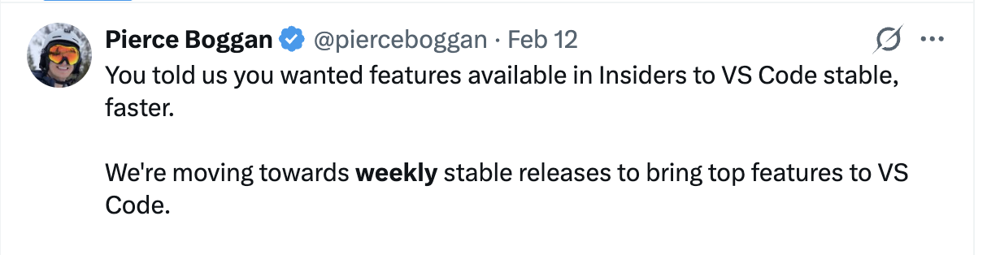
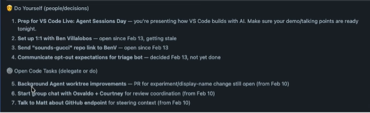
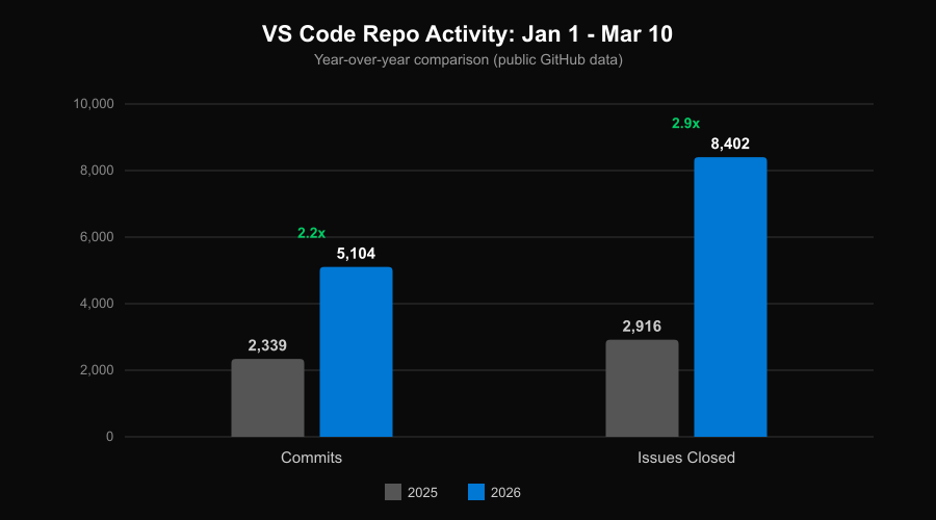

VS Code 如何利用 AI 进行构建
2026年3月13日，作者 Pierce Boggan
我们每天都在使用 AI 来交付 VS Code。它让我们变得如此高效，以至于在坚持了十年每月发布之后，我们刚刚转向了每周发布。智能体是解锁这一切的关键，不仅用于编写代码，还贯穿于团队工作的方方面面。
为了开启智能体会话日，我与 VS Code 团队的工程经理彭律坐在一起，深入探讨了 VS Code 团队如何在日常工作中实际使用 AI。不仅仅是实现功能（这部分不言自明），而是围绕构建功能的一切：分类、代码审查、发布说明、验证，以及在会议密集的时间表中保持高效。
在那场会议中，我们大概只覆盖了团队在任何一天使用智能体所做的事情的 5%。但这足以代表一个被数百万开发者使用的产品是如何构建的。因此，我们想更多地分享这些工作流的重大近期变化，以及我们认为下一步的方向。
坚持十年每月发布后，我们改为每周发布
十年来，我们每月交付一次 VS Code。每个月我们都走过那条运转流畅的循环：规划、构建、测试、收尾、交付。随着团队的每个成员轮流承担不同的角色，这种节奏已经成为了团队文化的一部分。
最近，我们决定开始以每周的节奏交付 VS Code。同时，我们希望保持同样高的严谨性和质量标准。每月循环给你喘息的空间——有时间规划，有时间进行完整的收尾周（团队成员互相交叉测试各自的功能），有时间编写详尽的发布说明。转向每周节奏意味着所有这些都必须变得更快，或者实现自动化。这是一个巨大的变化，一年前我们不可能做到。这一转变之所以成为可能，完全是因为智能体改变了我们的工作方式。

每周节奏并非为快而快。它是为了更快地将改进带给开发者。一个 bug 修复过去要等三周才能进入下一个稳定版本，现在几天就能交付。一个周一合并的功能，当周就能出现在开发者的编辑器里。那个交付 > 学习 > 迭代的反馈循环变得快得多。
我们从这一转变中学到的
我们的工作流和流程每天都在持续演进，因为我们边学边适应。但有一些关键经验始终成立：
- 并行化自己。 养成在切换上下文之前启动多个智能体会话的习惯。工作树、云端智能体、多个 VS Code 会话……全部用上。
- 跳过中间产物。 过去是会议记录 → 议题 → 规格说明 → 代码，现在实际上正在变成会议 → 智能体会话 → 代码 → PR。
- 自动化那些随速度增长的开销。 我们为议题分类、提交摘要、发布说明、代码审查构建了智能体驱动的流水线，全部使用 Copilot CLI、Copilot SDK 和 GitHub Actions。工程师仍然在这些工作流的另一端，但智能体帮助更快地将正确的事情呈现给正确的人。
- 先投资约束框架，再追求速度。 测试、黄金场景和代码审查关卡可以防止智能体驱动的速度变成智能体驱动的回归。
- 所有权正在演变。 当产品经理、其他领域的工程师、社区贡献者和智能体都可以为任何组件做出贡献时，传统的所有权模型需要适应变化。对结果的责任仍然落在工程师身上。
- 在品味方面让人类保持在回路中。 智能体检查正确性，人类评估愉悦感。
让我们更详细地看看这些经验在团队中的具体体现。
并行工作
Paul Graham 写过一篇著名的文章，讲述创造者时间表和管理者时间表从根本上是不兼容的。在最近之前，这基本上是正确的。但智能体正在改变这一局面。
一个典型的一天可能看起来是这样的：
- 进入一个会议之前，启动 3-4 个智能体会话，用于修复 bug、原型化功能或分类议题。
- 会议期间，智能体在多个 VS Code 会话、工作树或云端中并行运行。
- 会议结束后，审查智能体的输出，在本地验证，合并或重新提示，然后再次启动。
管理者仍然参加会议和其他管理任务，但他们可以使用智能体也承担一些在会议密集的时间表中过去不可能完成的创造者工作。
让我给你一个真实的例子。彭律每天早上从更新 VS Code Insiders 开始。大多数日子，我们每天交付两次 Insiders 构建，以便早期获得我们正在开发的功能的反馈。然后他运行一个自定义智能体，通过 Work IQ 获取他的会议安排，并生成他当前任务盘点的快照。
从那里开始，彭律决定什么需要他亲自关注，什么委托给智能体，以及为团队优先处理什么。智能体处理收集上下文的繁琐工作，这样他就可以直接切入有趣的问题。当他进入第一个电话会议时，任务已经在并行运行了。

"以前，你总是按顺序工作。你写笔记，把它们变成议题，然后别人或者你之后再来处理。现在你有能力并行做事。这是你必须养成的习惯。所以，我不再写会议记录了，我直接启动智能体。" —— 彭律
这确实是一项新的肌肉记忆。有人在会议中提到我们需要去做的事情，我当场就会启动智能体。我们还在 Teams 中为大多数会议启用了转录功能，所以事后获取上下文很容易。过去是会议记录变成议题再变成工作，现在只是当下启动的一个提示词。
自动化开销
更高的速度是好事。但它也带来了自身的开销：更多需要分类的议题，更多需要跟踪的提交，更多需要编写的发布说明。以下是我们如何自动化那些随速度增长的部分。
提交摘要。 我们构建了一个自定义斜杠命令，获取过去 24 小时中多个仓库的所有提交，并用一个快速模型对其进行摘要。过去你执行 git fetch 后可能有 20 到 30 个提交，现在可能有 100 多个在等着你。一个完整的功能领域可以在一天内落地。同一条流水线还会输入到我们的 Insiders 更新日志中，并为我们的自动化 X 账户提供每日更新帖子。所有这些都基于 Copilot CLI 和 Copilot SDK 构建，作为由主分支提交触发的 GitHub Actions 运行。
议题分类。 VS Code 是 GitHub 上最大的开源项目之一。我们热爱我们的社区，我们收到的大量议题反映了有多少人关心这个产品：每天有数百个议题提交。我们过去有一个轮值的"收件箱跟踪员"角色，一个人花一周时间对所有内容进行分类。这种方式已经无法扩展。
现在，每当一个议题被打开，它就会触发 GitHub Actions 中的一个智能体循环，检测重复项（带有置信度分数），确定正确的负责人，并建议标签。该智能体读取我们的所有权文档，并查看历史分配模式，因为所有权会随时间变化。
你可以在仓库的公开数据中看到这一点：比较每年一月到三月的数据，提交量已经翻了一倍多，团队关闭的议题数量接近三倍。更好的分类帮助工程师更快地找到并修复正确的议题，从而为实际的软件开发腾出更多时间。

"现在这段代码是 Copilot 写的，谁是其合适的负责人？我会说仍然是我们的工程师对结果负责。但你确实需要合适的约束框架，以欢迎其他人对你的组件做出贡献。" —— 彭律
团队还构建了一个 Chrome 扩展，直接在 GitHub 议题上显示分类建议，例如重复项、负责人和标签。它包含一个仪表板，显示团队中的议题状态。在 VS Code 内部，自定义斜杠命令让工程师无需离开编辑器就能整理议题并查找重复项。
我们已经看到团队交付速度的显著提升。而且，随着这些工作流的成熟，还有更多我们可以继续自动化、简化和学习的地方。
每个人都在交付代码
这是我最兴奋的部分，因为它比任何其他事情都更彻底地改变了我的工作方式。
传统的产品经理循环是这样的：编写规格说明或 PRD → 创建议题 → 交给工程团队。没有人喜欢阅读那些规格说明，而根本问题是它们基于假设。你在写你认为体验应该是什么样的东西，但你在真正构建出来之前并不知道。因此，功能验证的周转时间可能很长。
变化在于，我不再创建规格说明，而是创建一个原型，一个实际的拉取请求！
有了 VS Code 中的智能体，我可以从有人在 X 或 Reddit 上给我们反馈，到产出一个可运行的原型，在 Insiders 上自行托管并体验它，然后继续迭代。上个月我合并了一个 PR，实现了在 Copilot 聊天中分叉对话的功能。与我们的工程师之一 Justin 一起，我们审查了 PR，在办公室里一起处理了一些 CSS 更改，然后合并了它。这个功能现在已经进入 VS Code。
这并不意味着所有这些原型最终都会进入产品。工程师仍然对代码质量和架构负责。如果彭律看了我的 PR 说"这没有正确的架构"，那是合理的，我可以接受我的 PR 被丢弃并重建。但 PR 比任何文档都更能推动对话向前发展。第一个 PR 不必完美，它推动了进展，并与负责该功能领域的工程师开启对话。
这个工作流也是对你的代码库是否为智能体准备好的一项试金石测试。智能体能否找到正确的组件？能否找到回归问题？能否找到正确的修复方案？如果一个产品经理可以向智能体抛出一个问题并获得一个合理的 PR，这告诉你一些关于代码库结构、文档和测试覆盖率的好消息。如果智能体挣扎了，这也是一个信号。
在速度提升的同时保持高质量
更高的速度意味着更多的回归风险。
"没有合适的约束框架，第一两周你的生产力真的很高。然后你很快就达到了天花板，开始不断出现回归问题。" —— 彭律
如果一个新组件没有良好的护栏，智能体驱动的开发起步强劲，然后质量迅速下降。基础仍然重要，而有了 AI，我们实际上可以改进这些基础：
- 自动化验证。 当你同时运行 5-10 个智能体时，手动验证每个智能体交付了正确的体验（而不仅仅是编译通过的代码）是非常昂贵的。我们的团队构建了一个自定义智能体，使用 Playwright MCP 服务器启动 VS Code，导航到被测功能，截取屏幕截图，并评估更改是否匹配预期行为。因为它在智能体循环中运行，如果截屏显示有异常，智能体会去修复它。截屏会被存储以供人类审阅。
- 测试。 全面的测试套件、单元测试、集成测试以及运行它们的基础设施，只是基本要求。除此之外，我们记录了黄金场景：核心用户流的预期行为规格。我们传统上在月度收尾周手动测试这些场景。我们现在将这些场景交给智能体作为自动化合并后验证来运行。我们还在探索使用这条流水线自动生成演示录制：一个 PR 落地，一个演示视频生成，这就成了更新日志或推文的内容。
- 代码审查。 每个 PR 自动获得 Copilot 代码审查，工程师在请求人工审查之前先解决 Copilot 的评论。六个月前，我们没有强制执行这一点，因为反馈太过嘈杂。在过去的几个月里，模型质量显著提高，通常能在第一遍就发现安全、性能、代码质量等问题。在请求人工审查之前先解决这些评论已经成为我们工作流中自然的一部分。我们通过一个 Slack 频道进行协调，机器人会发布带有 CI 和 Copilot 代码审查状态指示器的 PR，两者都会在检查完成时原地更新。文化是"提交一个，审阅一个"：提交一个 PR，领取一个审查。
- 品味评估。 人工审查不会消失，甚至变得更加重要。当智能体编写更多代码而且 PR 落地更快时，人类审核者检查更改是否对产品有意义。这在长期来看是否符合架构？使用起来感觉对吗？智能体可以捕捉 bug，但它们无法告诉你一个功能是否会让开发者感到愉悦。
传统上，我们有收尾周，工程师、产品经理和设计师互相测试各自的功能。我们不是在取消这一点，而是在时间上压缩它。在产品管理方面，我一直在探索我认为的基于品味的评分：写下我希望一个功能具有的定性体验，然后使用智能体评估实现是否匹配。也许智能体 80% 的观察是有用的，20% 我忽略，但那 80% 仍然可以让你走得很远。比如：我们的模型选择器只显示模型名称和倍率吗，还是还有用户真正想知道的更多信息？
我们认为同样的方法可以帮助我们检查我们发布的文档是否与实际使用产品的体验一致。我们所有的 VS Code 文档主要由一个人编写，考虑到我们的速度，这有点令人惊叹，但当产品变化得这么快时，文档可能很快过时。我们正在探索智能体如何帮助我们自动捕捉这种漂移。
下一步
更广泛地说，所有这些都归结为我们所认为的面向智能体的代码库评估：你的代码库是否具有让智能体有效贡献的结构、文档和测试覆盖率？
我们真诚地好奇：你们团队的版本是什么样的？有没有我们遗漏的工作流？你们自动化了哪些我们还没想到的事情？请在 VS Code 仓库中给我们提一个议题，或者在 X 上找到我们——我们与你一起构建，你的反馈会塑造下一步的发展。
我们在智能体会话日上还有很多其他精彩的会议，如果你还没有看过，不妨去看看。
快乐编码！💙